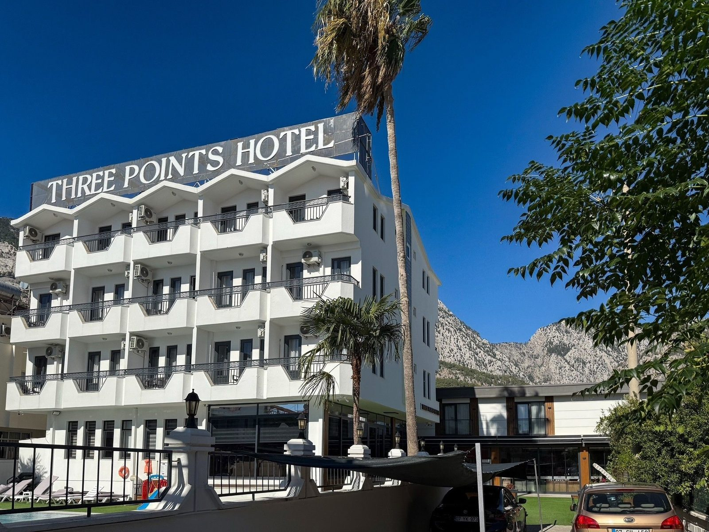
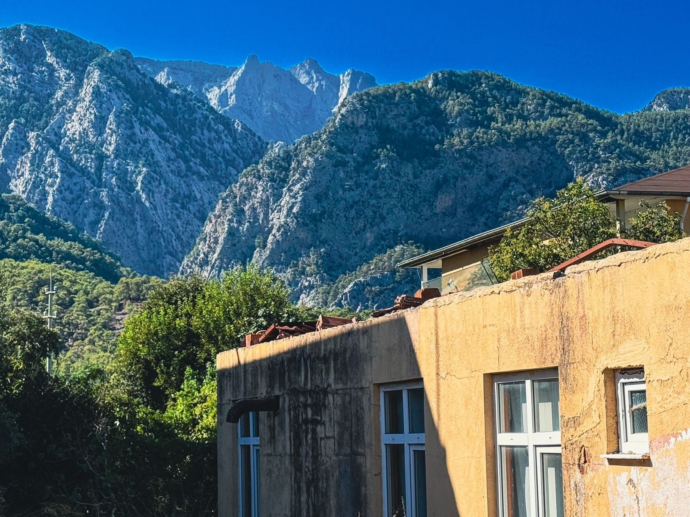

Es gibt Hotels, die sind wie Zufluchtsorte. Nicht groß, nicht laut, nicht überlaufen. Klein. Gemütlich. Überschaubar. Genau so eins fand ich in Beldibi, einem kleinen Flecken an der türkischen Riviera zwischen Antalya und Kemer. Ich bin echt ganz gern an Orten, die man auf der Landkarte erst beim zweiten Hinsehen findet.
Das Hotel
Von außen unscheinbar, von innen ein Mikrokosmos des Guten. Keine Riesenpools mit Rutschen, kein Animationsteam, das einen morgens um neun zum Aerobic zwingt (allein dafür: fünf Sterne). Stattdessen: Ruhe. Ein Garten mit Zitronenbäumen. Ein kleiner Empfang, wo man beim Check-in noch persönlich begrüßt wird. Mit Namen, nicht mit Zimmernummer. Mein Zimmer war groß, mit Mini-Balkon und Blick auf die Anlage. Das Meer konnte man erahnen. Reichte völlig.


Der Strand und das türkisfarbene Wasser
Der Strand hier ist nicht der feinsandige Traum aus dem Reiseprospekt. Er ist steinig. Die Steine klappern unter den Füßen wie Applaus, wenn man zum Wasser geht. Und das Meer, das Meer ist von einem Türkis, das fast unverschämt wirkt. Als hätte jemand am Farbregler gedreht und vergessen, ihn zurückzustellen.
Die Erfrischung: phänomenal. Nach einer halben Stunde in der prallen Sonne taucht man ein in dieses klare, kühle Nass und fühlt sich wie frisch entwickelt. Ich habe Stunden am Wasser verbracht, bin geschwommen, habe auf dem Rücken treibend den Himmel beobachtet. Produktivität: null. Zufriedenheit: maximal.

In die Berge
Beldibi ist nicht nur Strand. Hinter dem Küstenstreifen erheben sich die Taurus-Berge, und die wollte ich erkunden. Früh am Morgen, bevor die Hitze unerträglich wurde, bin ich losgezogen. Erst durch Pinienwälder, dann wurde es felsiger, steiler. Meine Wanderschuhe haben mich mehrfach gefragt, ob das wirklich sein muss.
Und dann, nach etwa zwei Stunden Aufstieg, dieser Blick: unten das türkisfarbene Meer, das sich sanft an die Küste schmiegt. Die Bucht von Beldibi von oben: ein Postkartenmotiv, für das kein Verlag der Welt bezahlen müsste, weil es einfach so da ist. Die Luft klar, die Zikaden zirpen, sonst nichts. Es hat sich gelohnt. Es lohnt sich immer. Die beste Aussicht kommt nun mal nach dem härtesten Anstieg.
Menschen zwischen den Welten
Abends saß ich oft am Strand oder im Garten des Hotels und habe beobachtet. Was mir auffiel: Die Gäste kamen zu großen Teilen aus Russland, aber auch aus der Ukraine. In Zeiten des Konflikts erwartet man vielleicht Spannungen. Hier herrschte eine freundliche Atmosphäre.
Die Menschen sprachen miteinander. Lachten. Tauschten Ausflugstipps. Kinder spielten gemeinsam im Pool. Durch meine Russischkenntnisse konnte ich mich oft unterhalten, mit Gästen aus Moskau und der Ukraine. Wir redeten über das Wetter. Über das Essen. Über das türkisfarbene Wasser. Über all das, was verbindet statt trennt.
Es waren diese typischen Gespräche, bei denen man sich auf Englisch, Russisch und mit Händen und Füßen verständigt. Grammatik: kreativ. Verständigung: hundert Prozent. Es war sehr lustig.

Spaziergänge am Wasser
Die Strandpromenade in Beldibi ist nicht beleuchtet. Sie ist ein schmaler Pfad entlang der Küste, mal über Steine, mal über hölzerne Stege. Ich bin diese Strecke jeden Abend gelaufen, habe die Lichter Antalyas beobachtet und die Sonne hinter den Bergen untergehen sehen. Jeden Abend. Wurde nie langweilig.
Nette Menschen zu treffen ist hier verdächtig einfach. Schnell steckt man in einem Gespräch, das man gar nicht geplant hatte. Genau das macht so einen Urlaub erst spannend.
Fazit
Beldibi ist nichts für Pauschalurlauber, die Animation und Action wollen. Beldibi ist für die, die Entschleunigung suchen. Für die, die in einem kleinen Hotel mit Herz wohnen wollen. Für die, die steinige Strände nicht stören, solange das Wasser türkis ist. Und für die, die glauben, dass Reisen Brücken bauen kann: zwischen Nationen, Sprachen, Menschen.
Ich komme wieder. Vielleicht nächstes Jahr. Dann mit mehr Zeit und einem besseren Wörterbuch.
📍 Beldibi auf Google MapsQuellen & Recherche
Diese Story basiert nicht nur auf eigenen Erinnerungen. Ein paar Fakten habe ich recherchiert und mit folgenden Quellen abgeglichen. Wer will, kann selbst nachlesen.